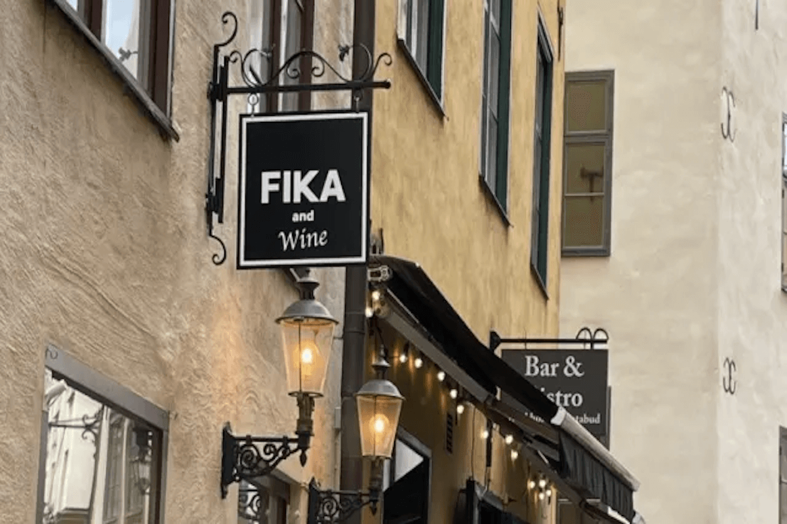

Stockholm is a paradise for coffee lovers and fika fans. From historic bakeries to modern specialty coffee shops, here are five must-visit cafés for your next Swedish fika adventure.
Lillebrors Bageri – A warm and inviting neighborhood bakery in Stockholm with a charming outdoor terrace. Known for its freshly baked breads and pastries—think buttery croissants, crisp sourdough, and seasonal treats—it's a local favorite for relaxed fika at any time of day. Whether you're picking up something to go or lingering over coffee, Lillebrors delivers simple, heartfelt goodness.
Vete‑Katten – Founded in 1928, Vete‑Katten is a true Stockholm institution. This classic konditori serves everything from perfect cinnamon buns, rich princess cakes, to savory shrimp sandwiches and fresh salads. With several locations across the city and a timeless, elegant atmosphere, it's a place to pause, savor, and feel part of Stockholm's story.
Café & Bageri Pascal – A relaxed gem with multiple locations, Pascal is beloved for its freshly baked goodies and quality coffee. Wake up to pillowy croissants, hearty sourdough and flaky pastries, or stop by for an afternoon bite and expertly brewed espresso. This café is consistently welcoming and cozy, ideal for a casual, everyday fika.
FIKA & Wine – Fika & Wine offers a unique twist on the traditional fika experience. By day, enjoy thoughtfully paired pastries and small bites with excellent coffee. In the evening, the vibe shifts to natural wines and cozy gatherings. Expect sophisticated flavor combinations and a warm, living-room ambiance—the perfect spot for a relaxed evening fika.

Rosendals Trädgård – Located in Djurgården's historic biodynamic garden, Rosendals Trädgård is more than a café—it's an experience. Their wood-fired bakery creates organic breads, seasonal cakes, and light meals alongside garden-fresh salads and soups. Surrounded by orchards, greenhouses, and vintage charm, it's a lush, peaceful retreat for your fika moment.
Each of these spots offers a unique take on Swedish coffee culture. Don't forget to try a kanelbulle or cardamom bun with your coffee!